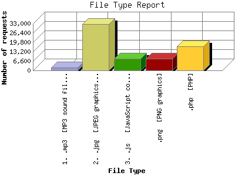

Analog 5.1
Analog 5.1 Report Magic 2.21
Report Magic 2.21The File Type Report identifies the type of information that is requested from the web site. GIF and JPG are the two types of graphic (image) files that are most commonly supported by web browsers. HTML (sometimes abbreviated HTM), ASP, and [directories] all represent actual pages. The number of image requests will almost always outnumber page requests as one page may contain several images.
This report shows results with at least 0.100000 percent of the total bytes. This report is sorted by amount of bytes transferred.

| File Type | Number of requests | Percentage of the bytes | |
|---|---|---|---|
| 1. | .mp3 [MP3 sound files] | 1,886 | 91.57% |
| 2. | .jpg [JPEG graphics] | 32,716 | 6.15% |
| 3. | .js [JavaScript code] | 8,118 | 0.88% |
| 4. | .png [PNG graphics] | 8,054 | 0.68% |
| 5. | .php [PHP] | 17,058 | 0.36% |
| [not listed: 7] | 28,380 | 0.35% | |
This report was generated on November 26, 2013 08:08.
Report time frame April 12, 2012 00:27 to November 25, 2013 23:35.
| Web statistics report produced by: | |
| Analog 5.1 | Report Magic 2.21 |